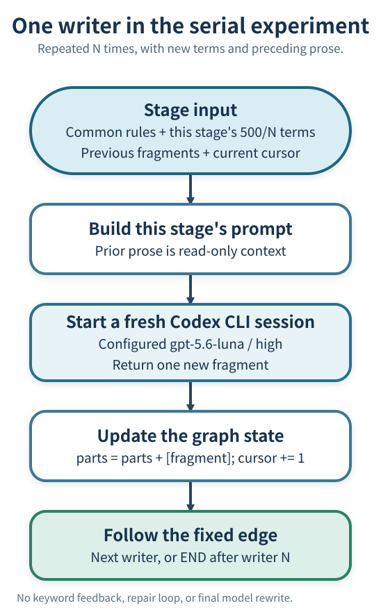
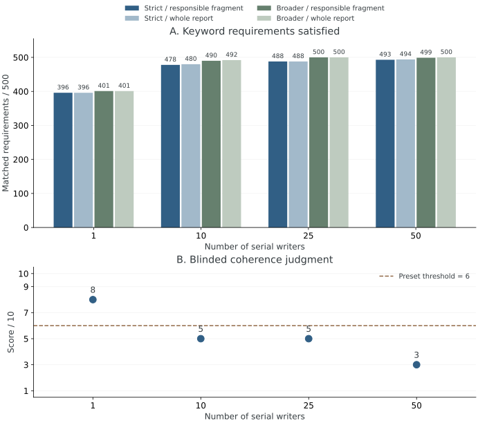
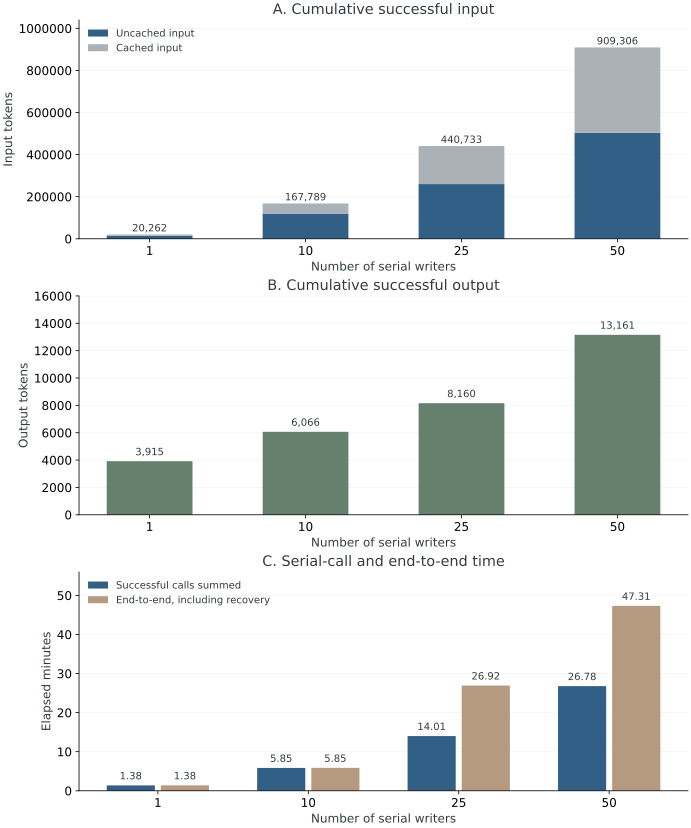

Agent Workflows
LangGraph: State, Context, and Task Decomposition
A long instruction document can describe a workflow in great detail, yet its execution still depends on what an agent remembers at the moment of action. LangGraph makes the execution structure explicit: what information persists, which operation runs next, and which conditions permit progress. The difficult design question is where to place those boundaries.
This article develops that question through one actual experiment. The same 500 keyword requirements were assigned to one writer or divided among 10, 25, and 50 serial writers. Smaller assignments improved literal compliance, while the assembled reports lost coherence and required more model input. Understanding both outcomes is more useful than treating a larger graph as an automatic improvement.
1. From Instructions to an Executable Process
Consider a scientific request: start from a crystal structure and estimate a carrier-relaxation observable. A complete calculation may involve structural relaxation, supercell construction, molecular dynamics, electronic calculations, nonadiabatic couplings, and dynamics analysis. Each stage has its own inputs, parameter choices, and acceptance conditions. A large skill document can explain all of them, but explaining the required order does not itself enforce that order.
A runtime can instead record the accepted structure, select the rules relevant to the current stage, invoke an appropriate executor, and prevent a dependent stage from starting before its prerequisites are satisfied. The model still makes scientific judgments. The surrounding program determines when those judgments are requested and how their results enter the process.
A skill and a graph therefore play complementary roles. A skill supplies procedural knowledge; the graph organizes execution and information flow. A useful implementation loads a stage's mandatory instructions when the stage begins, rather than relying entirely on the agent to remember that it should find them.
A skill can also include executable scripts and validators. Such a skill can implement many of the same controls. The practical distinction is between instructions that an agent must remember and rules enforced by an execution program; using LangGraph is one way to build that program. The experiment below uses a full-prompt control, not the strongest possible script-backed skill.
2. State, Nodes, Edges, and Model Context
LangGraph is an orchestration framework. In its Graph API, a state holds application data, a node is a function that reads state and returns updates, and an edge determines which node can run next. A node can call a language model, parse a file, invoke a simulator, or wait for an external decision. Node count and model-call count need not be equal. The official Graph API overview defines these components.
A fixed edge expresses a known dependency. A conditional route chooses among allowed successors using the current result. Independent work can run in parallel, and a bounded loop can revisit a stage when a specified condition requires it. The outer process can be stable while a model chooses tools or parameters within one stage. LangGraph's workflow patterns cover fixed and dynamic arrangements.
The graph state is not automatically identical to a model's prompt. The program may retain a complete record while giving a particular model only its task, relevant evidence, and selected upstream results. Conversely, placing every conversation into a shared messages list can recreate a large common context. Separate model conversations require deliberate executor and prompt construction.
Persistent checkpoints can retain execution state for continuation; stores support application data across threads. These mechanisms must be configured for the required lifetime. External actions also need safe recovery: resuming a workflow must not blindly submit the same compute job twice. The persistence guide and fault-tolerance guide describe the relevant mechanisms.
3. The 500-Requirement Task
IFScale supplies a deliberately simple instruction-following stress test: write a professional business report containing a specified set of keywords. Its paper is How Many Instructions Can LLMs Follow at Once? The present experiment uses one frozen, seed-0 list of 500 distinct terms from the released implementation, with an adapted common writing prompt and serial execution design.
This is one writing problem with 500 checks. Each check has the same form: include an exact word. The requirements are not 500 different scientific rules. The first ten terms are:
voting, copayment, mechanism, subrogation, intercompany,
HIPAA, streaming, whistleblower, advisory, ventureThe common instructions ask for a coherent English report of approximately 2,500 words, with sections and meaningful business analysis. The writer may invent a diversified enterprise to connect the domains. Listing the terms or appending a glossary is prohibited. Exact forms matter: a plural, synonym, or hyphenated compound does not satisfy the strict literal rule. The task does not provide corporate accounts or test the factual truth of business recommendations.
The word target is soft, and it is the same for all four arms. Actual reports contain 2,524–2,622 whitespace-separated words. The task wording and word target differ from an earlier single-writer trial; the fresh one-writer arm below is the appropriate control.
4. How the Serial Graphs Were Configured
All four arms use LangGraph 1.2.20 and the same Codex CLI model configuration, gpt-5.6-luna with reasoning effort high. Each writer starts a new ephemeral CLI conversation. The CLI configuration and observed execution are recorded; its event interface does not expose an independent backend response.model field. Tool, memory, skill-discovery, and internal delegation features were requested off; no tool calls were observed.
| Writers N | Assigned terms per writer | Soft words per fragment | Order |
|---|---|---|---|
| 1 | 500 | 2,500 | One generation |
| 10 | 50 | 250 | Strictly serial |
| 25 | 20 | 100 | Strictly serial |
| 50 | 10 | 50 | Strictly serial |
The term order remains fixed. With one-based writer index \(i\), writer \(i\) receives positions \((i-1)500/N+1\) through \(i500/N\). This is a contiguous equal partition, without grouping the words by industry or planning a topic for each fragment.
Each model receives the shared writing instructions, its fragment number and word target, its own term list, and all earlier report prose as read-only data. Earlier term lists, conversations, and reasoning are excluded. A term must occur in the responsible writer's new fragment even if it already appeared upstream. The first writer introduces the report; intermediate writers continue it; only the final writer is invited to conclude.

The graph's state contains only parts, the completed fragment bodies, and cursor, their count. Term partitions live in the orchestrating program. The core construction, with file recording and the CLI wrapper omitted, is:
from typing import TypedDict
from langgraph.graph import StateGraph, START, END
class DraftState(TypedDict):
parts: list[str]
cursor: int
graph = StateGraph(DraftState)
for i in range(N):
def writer(state, index=i):
assert state["cursor"] == index
previous = "\n\n".join(state["parts"])
fragment = invoke_fresh_executor(
common_rules, chunks[index], previous, index, N
)
return {"parts": state["parts"] + [fragment],
"cursor": index + 1}
name = f"writer_{i + 1:03d}"
graph.add_node(name, writer)
graph.add_edge(START if i == 0 else f"writer_{i:03d}", name)
graph.add_edge(f"writer_{N:03d}", END)
result = graph.compile().invoke(
{"parts": [], "cursor": 0}, {"recursion_limit": N + 5}
)There is no messages reducer: each update explicitly returns the old fragment list plus one new fragment. Final assembly joins the original fragment bodies with blank lines and adds report tags. It does not perform a model rewrite. A normally completed model response advances the graph regardless of its keyword score.
The original execution saved state and per-call files, without configuring a native LangGraph checkpointer. Three no-answer connection interruptions were recovered by verifying and reusing completed fragment bytes, then continuing the remaining calls. This recovery was an executor-level procedure. It is not a test of native checkpoint recovery, and it never resampled a returned answer because of its content.
5. Inspect Every Node Assignment
The inspector exposes the actual allocation and generated fragment for all 86 successful writer calls. For example, node 20 of the 50-writer arm receives terms 191–200 and the prose from nodes 1–19. The complete allocation is also available as a static appendix and CSV download.
50-writer arm, node 1: terms 1–10; target approximately 50 words.
voting copayment mechanism subrogation intercompany HIPAA streaming whistleblower advisory venture
This report introduces a diversified enterprise whose governance, healthcare, media, and investment activities reinforce one another. Its voting mechanism supports accountability; HIPAA controls and a transparent copayment policy protect patients, while subrogation and intercompany discipline strengthen insurance operations. A whistleblower channel and advisory oversight guide a streaming venture toward responsible growth and durable stakeholder value.
Read-only preceding prose supplied to this node
No preceding report text for the first writer.
Reconstructed task prompt, excluding CLI-supplied context
The complete writing instructions and all assignments are available in the data download.
The first node is shown without JavaScript. Enable JavaScript to inspect other nodes, or use the complete static assignments below.
A concrete error is visible at . It was assigned contribution but wrote contribute. An earlier node happened to use contribution, so final-document coverage hides the local failure. This is why the measurement checks the responsible fragment as well as the assembled report.
6. What Was Measured
The primary metric is assigned-local strict coverage: count a requirement only if its responsible fragment satisfies the original literal matcher. The secondary metric is strict coverage anywhere in the final report. A separate word-boundary matcher from the upstream analysis supplies a broader diagnostic. Both ignore case. The strict matcher splits on whitespace and strips a limited punctuation set; the broader matcher accepts word boundaries inside some hyphenated or possessive forms.
Strict failures therefore include both absence and form violations. For example, solar-powered fails the strict requirement for solar. A broader match can recover it without making the strict instruction satisfied. It would be misleading to call every strict failure a completely forgotten word.
After writing, one new model conversation per report assessed coherence using the original 1–10 rubric, with 6 as the preset threshold. The judge saw one report and the rubric, but no arm identity, term list, coverage score, or other report. The judge used the same model configuration as the writers. Its score is a single subjective assessment, not human validation or an estimate with statistical uncertainty. The rubric concerns clarity and logic, not factual substantiation.
No score was fed back into writing. Intermediate offline snapshots of already completed arms were inspected while other arms continued, but prompts and returned fragments were not changed. Each arm has one report, so the experiment contains four outcomes rather than a sample of success probabilities.
7. Read the Coverage and Coherence Results

Panel A shows improved local literal compliance. Strict assigned-local coverage rises from 396 to 478, 488, and 493. Final-report strict coverage is slightly higher in two arms because a different writer sometimes supplies a missed word. The 25-writer arm reaches all 500 assigned terms under the broader rule; the 50-writer arm reaches 499 locally and 500 globally. Finer splitting is therefore not uniformly better even within keyword diagnostics.
Panel B shows the accompanying loss of report-level organization. Coherence scores are 8, 5, 5, and 3. The judge describes frequent unexplained domain shifts and weak causal connections in the split reports. None of those three reports reaches the preset coherence threshold. No arm simultaneously achieves complete strict keyword coverage and that quality threshold.
The allocation helps explain this tradeoff. A single writer can place related terms together anywhere in the document. Contiguous partitioning requires unrelated terms to occur together inside fixed, short fragments. A 50-word passage may need to connect governance, healthcare, media, and finance before the next arbitrary group arrives. The experiment changes both context allocation and the allowed locations of words; the coherence loss cannot be attributed solely to having separate model conversations.
8. Understand Token and Time Scaling

Panel A is dominated by repeated model input. The totals are 20,262; 167,789; 440,733; and 909,306 tokens. Dividing by writer count gives approximately 20,262; 16,779; 17,629; and 18,186 per successful call. The task-specific term list gets smaller, but each call still carries common instructions, CLI-supplied context, and progressively more prior prose.
The first 50-writer node has no preceding text and only ten assigned terms, yet reports 14,931 input tokens for a 2,311-character saved task prompt. This establishes substantial input beyond the explicit task prompt. Complete wire requests were not captured, so its exact division among client-supplied components is unavailable. A fresh conversation is not a guarantee of a minimal system context.
Let \(N\) be the number of writers, \(B\) the approximate common input per call, \(K\) the total tokens in the once-distributed keyword requirements, and \(L\) the final report length in tokens. With roughly equal fragments, repeated preceding prose contributes
Because the total report length is approximately fixed here, both repeated common input and repeated prose grow approximately linearly with N. The per-call overhead varies, so the expression explains scaling rather than fitting the observed totals exactly. If each additional node instead produced a fixed-length new passage, the growing document would make full-history rereading approximately quadratic. Selective handoff can change this cost.
Panels B and C show additional generation and elapsed-time costs. More calls also mean more total output and more opportunities to spend reasoning effort. Thus the experiment does not hold total inference budget fixed. Network recovery further separates successful-call time from end-to-end time. The cache split must also be considered before converting input volume into costs.
9. What This Comparison Establishes
Within this one adapted example, dividing the requirements among fresh writers substantially improves assigned-local literal coverage. That is useful evidence for injecting the relevant rules at the stage where they must be followed. It is not evidence that adding nodes automatically improves the complete task.
Several changes occur together: fewer assigned terms per call, more fresh conversations, more total reasoning and generation, immutable prior fragments, and a new local placement restriction. The single-writer control injects all requirements in one request; it does not test native skill discovery or loading. Equivalent Python orchestration could implement the same partition and handoff. The comparison therefore measures this combined design, rather than an accuracy effect unique to the LangGraph package.
The useful failure is equally specific. This graph has strong dependence on previous prose but weak division of responsibilities: every writer performs the same operation with the next slice of a list. It is a controlled test of requirement injection, while serving as a poor production design for a globally organized report.
10. Which Tasks to Split, and How
A useful boundary usually changes the required knowledge, tools, authority, deliverable, acceptance condition, or recovery behavior. The following comparisons are design judgments informed by the experiment and the documented workflow mechanisms; they are not additional measured benchmark results.
| Question | A useful boundary | A warning sign |
|---|---|---|
| What work changes? | Parameter design, simulation execution, result extraction, and interpretation have distinct responsibilities. | Every node repeats the same vague task with an arbitrary slice of text. |
| What crosses the boundary? | A defined artifact, relevant facts, assumptions, unresolved issues, and evidence links. | Either every chat is copied or essential context disappears. |
| What determines progress? | Recorded prerequisites and explicit route conditions. | A prompt says “check first” but the executor always advances. |
| Where is a model necessary? | Scientific choices and interpretation use a model; parsing and known checks use code. | Every arithmetic or file operation starts another model conversation. |
| Who owns the whole result? | A shared plan and an explicit integration responsibility. | Locally acceptable pieces are simply concatenated. |
| What happens after interruption? | The system identifies completed work and safely resumes pending work. | It repeats external actions or restarts the entire calculation. |
A scientific computing workflow has natural artifact boundaries. A relaxation stage should deliver an identified structure and its acceptance evidence. A supercell stage consumes that accepted artifact and records the transformation. Dynamics setup uses the selected physical conditions and its own rules. Result extraction produces numerical observables for interpretation. Fixed dependencies can surround flexible parameter selection inside a stage. These are proposed design boundaries, not a claim that this experiment ran a scientific simulation.
The next model needs sufficient context: the scientific goal, relevant physical assumptions, the accepted upstream artifact, and current constraints. A short handoff saying only “relaxation finished” is inadequate. The complete state can retain provenance and detailed evidence while the prompt selects the fields needed now. Any changed upstream input must be reflected in the validity of dependent results.
Scientific writing needs an owner of the global argument. Evidence extraction, interpretation, argument planning, section drafting, and whole-document integration can be different responsibilities. Shared definitions, figures, and claim-to-evidence relationships should persist across them. Dividing an arbitrary term list provides no such plan. For a short argument whose steps continually constrain one another, keeping the reasoning in one context may be more effective.
Independent cases are candidates for parallel work. Separate materials, parameter points, or documents can be processed independently when their inputs and outputs are well defined. They need an explicit aggregation rule, not a fabricated serial dependence. Conversely, conditional diagnosis is often better represented by a few stages with bounded local tool use than by a predetermined node for every possible thought.
The practical design test is to specify, for every proposed node: the problem it solves, its required information, its deliverable, the condition for downstream use, and the handling of failure. Then compare the workflow with a strong single-agent control using task correctness, unmet requirements, human intervention, elapsed time, and model usage. Anthropic's engineering guidance likewise recommends increasing complexity only when it earns its cost.
11. Code, Data, and Complete Assignments
The public package contains the frozen keyword order, every original fragment, per-node allocations, deterministic coverage results, and the reported successful-call usage. Private machine paths, credentials, execution identities, and service endpoints are excluded. It preserves all 86 successful writer answers rather than selecting favorable fragments.
- Package description and reproduction instructions; complete experiment data.
- Executable LangGraph replay and offline scoring; all 86 node assignments.
- Constraint-by-constraint results: 1 writer, 10 writers, 25 writers, 50 writers.
- Complete original reports: 1 writer, 10 writers, 25 writers, 50 writers.
- Result-figure generator; editable diagram specification; ELK-layout SVG and rendered diagram. The layout uses ELK through elkjs 0.11.1.


Offline replay traverses a real StateGraph using saved answers and recomputes the deterministic scores; it makes no model calls. It verifies the published assembly and scoring, not a new sample of model behavior, native checkpoint recovery, or a rerun of the coherence judges.
All 1 node assignments: 500 terms per writer
| Node | Positions | Assigned terms, in original order | Strict / broader |
|---|---|---|---|
| 1 | 1–500 | voting, copayment, mechanism, subrogation, intercompany, HIPAA, streaming, whistleblower, advisory, venture, anonymity, budgeting, succession, nonpublic, conflict, colocation, policyholder, injunction, virtual, backed, monopoly, noncurrent, amenities, exhibit, diesel, recruitment, pivot, observable, captive, upstream, liquidation, interim, meeting, hydrogen, proceeding, noncontrolling, solutions, agricultural, impression, algorithm, wholesale, direct, comparative, seamless, recall, ROI, research, bankruptcy, expenditure, council, multimodal, clinical, engagement, seating, pioneer, fleet, capitation, currency, spectrum, encryption, safety, inclusion, settlement, inventories, reference, leverage, cycle, presentation, frequency, rebate, rollout, lessor, discussion, hydroelectric, director, moderation, expansion, consent, infrastructure, penalties, qualified, actuarial, transparency, sanction, commercial, bottleneck, fulfillment, working, geothermal, fiscal, scalable, commodities, prospectus, matching, downtime, prevention, frozen, seasonality, health, pharmacy, entries, defamation, online, transmission, chain, demographic, greater, adaptable, publisher, website, grounding, china, quarter, churn, monetization, origination, processing, mediation, platform, facility, materiality, ethics, product, nomination, divestiture, amendment, hazard, computation, technology, deliverable, international, subpoena, proposals, frills, oversight, administrative, installation, facilitation, compensation, evidence, issuance, factor, payout, shelf, vulnerability, tort, telephone, competitor, augmented, vest, roadmap, remittance, protein, reconciliation, latency, proxy, mobile, patch, redundancy, gross, integrity, sporting, issuer, redemption, traction, states, centralized, reimburse, commercialization, proportional, dispositions, affinity, affordability, negligence, unconventional, mortgage, trademark, export, scorecard, architecture, compromise, breaches, economy, concentration, inputs, escalation, liabilities, remediation, treatment, volume, sovereign, withholding, adverse, provision, intellectual, shortages, vertically, trustee, labor, majority, secrets, adequacy, tiering, collaboration, callable, copyright, taxonomy, geographies, linear, showrooms, container, revenue, content, outstanding, debt, convenience, joint, startup, borrowing, executive, stock, holders, bandwidth, defense, composition, signature, distinct, autopilot, insider, cashflow, enforcement, journey, emergency, general, measurable, penetration, mainframe, quantum, forensic, generative, emphasis, netting, logistics, completed, consumables, throughput, initiative, turnover, premium, EBITDA, undiscounted, argument, active, design, charter, ticket, hybrid, mandates, financial, sabotage, patent, annual, retention, stack, mitigation, theatrical, statistical, robotics, solar, attractions, protection, willful, maintenance, experience, reality, reckless, digital, healthcare, forfeiture, households, response, resolution, floating, residual, mobility, wellness, ecommerce, merger, rural, retrofit, solvency, optical, fintech, bundling, equivalents, timeliness, cortex, hierarchy, leadership, salary, specialty, strategic, goods, municipal, convergence, sustainability, stations, alliance, talent, personalization, supercharger, exploit, surplus, upgrade, japan, derivative, expense, impairment, repairs, agreement, ecosystem, facultative, synergies, transportation, attribution, beverages, securities, legal, collateral, portfolio, formulary, staffing, eligibility, edge, properties, modular, liquidity, milestone, return, episodic, information, unobservable, incentive, paragraph, perishables, endpoint, translation, select, severance, downgrade, fixed, powertrain, treaty, extension, appeal, comprehensive, global, credit, franchise, europe, pipeline, arbitration, correlation, enhancement, loyalty, shutdown, import, promissory, organic, exposure, range, decree, sensitivity, ESG, material, onboarding, legislation, climate, governance, revolving, remeasurement, domestic, permitting, detection, battery, neighborhood, biotech, simulations, chargers, modify, royalties, equity, durability, principles, overhead, intensive, standard, summary, salvage, creativity, emerging, innovation, payroll, localization, electromyography, endeavors, assumption, mismatch, tariff, justice, disagreements, partnership, intelligence, contribution, resilience, wealth, survey, fiduciary, journal, marketable, objective, future, uninsured, discovery, projection, supercenter, crypto, diluted, strategies, optimization, headcount, stewardship, collar, subsidiary, filing, foreclosure, recognition, opinion, nutrition, spark, enrollee, philosophy, blackout, tuition, attrition, maturing, union, yield, offices, estimate, productivity, utilization, narrative, gigafactory, arrangement, distillation, subsidy, messaging, obsolescence, dividend, conduct, department, unqualified, opportunity, deductible, magazine, appraisal, multilateral, holding, competition, expertise, parent, confirming, sheet, briefing, definitive, entertainment, delaware, macroeconomic, common, industry, stainless, washington, united, repatriation, neural, trends, occupancy, antitrust, indenture, pursuant, cloud, maturities, judgment, complaint, artificial, indirect, insight, energy, covenant | 396/401 of 500 |
All 10 node assignments: 50 terms per writer
| Node | Positions | Assigned terms, in original order | Strict / broader |
|---|---|---|---|
| 1 | 1–50 | voting, copayment, mechanism, subrogation, intercompany, HIPAA, streaming, whistleblower, advisory, venture, anonymity, budgeting, succession, nonpublic, conflict, colocation, policyholder, injunction, virtual, backed, monopoly, noncurrent, amenities, exhibit, diesel, recruitment, pivot, observable, captive, upstream, liquidation, interim, meeting, hydrogen, proceeding, noncontrolling, solutions, agricultural, impression, algorithm, wholesale, direct, comparative, seamless, recall, ROI, research, bankruptcy, expenditure, council | 49/49 of 50 |
| 2 | 51–100 | multimodal, clinical, engagement, seating, pioneer, fleet, capitation, currency, spectrum, encryption, safety, inclusion, settlement, inventories, reference, leverage, cycle, presentation, frequency, rebate, rollout, lessor, discussion, hydroelectric, director, moderation, expansion, consent, infrastructure, penalties, qualified, actuarial, transparency, sanction, commercial, bottleneck, fulfillment, working, geothermal, fiscal, scalable, commodities, prospectus, matching, downtime, prevention, frozen, seasonality, health, pharmacy | 48/49 of 50 |
| 3 | 101–150 | entries, defamation, online, transmission, chain, demographic, greater, adaptable, publisher, website, grounding, china, quarter, churn, monetization, origination, processing, mediation, platform, facility, materiality, ethics, product, nomination, divestiture, amendment, hazard, computation, technology, deliverable, international, subpoena, proposals, frills, oversight, administrative, installation, facilitation, compensation, evidence, issuance, factor, payout, shelf, vulnerability, tort, telephone, competitor, augmented, vest | 49/50 of 50 |
| 4 | 151–200 | roadmap, remittance, protein, reconciliation, latency, proxy, mobile, patch, redundancy, gross, integrity, sporting, issuer, redemption, traction, states, centralized, reimburse, commercialization, proportional, dispositions, affinity, affordability, negligence, unconventional, mortgage, trademark, export, scorecard, architecture, compromise, breaches, economy, concentration, inputs, escalation, liabilities, remediation, treatment, volume, sovereign, withholding, adverse, provision, intellectual, shortages, vertically, trustee, labor, majority | 48/50 of 50 |
| 5 | 201–250 | secrets, adequacy, tiering, collaboration, callable, copyright, taxonomy, geographies, linear, showrooms, container, revenue, content, outstanding, debt, convenience, joint, startup, borrowing, executive, stock, holders, bandwidth, defense, composition, signature, distinct, autopilot, insider, cashflow, enforcement, journey, emergency, general, measurable, penetration, mainframe, quantum, forensic, generative, emphasis, netting, logistics, completed, consumables, throughput, initiative, turnover, premium, EBITDA | 49/50 of 50 |
| 6 | 251–300 | undiscounted, argument, active, design, charter, ticket, hybrid, mandates, financial, sabotage, patent, annual, retention, stack, mitigation, theatrical, statistical, robotics, solar, attractions, protection, willful, maintenance, experience, reality, reckless, digital, healthcare, forfeiture, households, response, resolution, floating, residual, mobility, wellness, ecommerce, merger, rural, retrofit, solvency, optical, fintech, bundling, equivalents, timeliness, cortex, hierarchy, leadership, salary | 44/48 of 50 |
| 7 | 301–350 | specialty, strategic, goods, municipal, convergence, sustainability, stations, alliance, talent, personalization, supercharger, exploit, surplus, upgrade, japan, derivative, expense, impairment, repairs, agreement, ecosystem, facultative, synergies, transportation, attribution, beverages, securities, legal, collateral, portfolio, formulary, staffing, eligibility, edge, properties, modular, liquidity, milestone, return, episodic, information, unobservable, incentive, paragraph, perishables, endpoint, translation, select, severance, downgrade | 45/47 of 50 |
| 8 | 351–400 | fixed, powertrain, treaty, extension, appeal, comprehensive, global, credit, franchise, europe, pipeline, arbitration, correlation, enhancement, loyalty, shutdown, import, promissory, organic, exposure, range, decree, sensitivity, ESG, material, onboarding, legislation, climate, governance, revolving, remeasurement, domestic, permitting, detection, battery, neighborhood, biotech, simulations, chargers, modify, royalties, equity, durability, principles, overhead, intensive, standard, summary, salvage, creativity | 50/50 of 50 |
| 9 | 401–450 | emerging, innovation, payroll, localization, electromyography, endeavors, assumption, mismatch, tariff, justice, disagreements, partnership, intelligence, contribution, resilience, wealth, survey, fiduciary, journal, marketable, objective, future, uninsured, discovery, projection, supercenter, crypto, diluted, strategies, optimization, headcount, stewardship, collar, subsidiary, filing, foreclosure, recognition, opinion, nutrition, spark, enrollee, philosophy, blackout, tuition, attrition, maturing, union, yield, offices, estimate | 47/48 of 50 |
| 10 | 451–500 | productivity, utilization, narrative, gigafactory, arrangement, distillation, subsidy, messaging, obsolescence, dividend, conduct, department, unqualified, opportunity, deductible, magazine, appraisal, multilateral, holding, competition, expertise, parent, confirming, sheet, briefing, definitive, entertainment, delaware, macroeconomic, common, industry, stainless, washington, united, repatriation, neural, trends, occupancy, antitrust, indenture, pursuant, cloud, maturities, judgment, complaint, artificial, indirect, insight, energy, covenant | 49/49 of 50 |
All 25 node assignments: 20 terms per writer
| Node | Positions | Assigned terms, in original order | Strict / broader |
|---|---|---|---|
| 1 | 1–20 | voting, copayment, mechanism, subrogation, intercompany, HIPAA, streaming, whistleblower, advisory, venture, anonymity, budgeting, succession, nonpublic, conflict, colocation, policyholder, injunction, virtual, backed | 20/20 of 20 |
| 2 | 21–40 | monopoly, noncurrent, amenities, exhibit, diesel, recruitment, pivot, observable, captive, upstream, liquidation, interim, meeting, hydrogen, proceeding, noncontrolling, solutions, agricultural, impression, algorithm | 18/20 of 20 |
| 3 | 41–60 | wholesale, direct, comparative, seamless, recall, ROI, research, bankruptcy, expenditure, council, multimodal, clinical, engagement, seating, pioneer, fleet, capitation, currency, spectrum, encryption | 20/20 of 20 |
| 4 | 61–80 | safety, inclusion, settlement, inventories, reference, leverage, cycle, presentation, frequency, rebate, rollout, lessor, discussion, hydroelectric, director, moderation, expansion, consent, infrastructure, penalties | 19/20 of 20 |
| 5 | 81–100 | qualified, actuarial, transparency, sanction, commercial, bottleneck, fulfillment, working, geothermal, fiscal, scalable, commodities, prospectus, matching, downtime, prevention, frozen, seasonality, health, pharmacy | 20/20 of 20 |
| 6 | 101–120 | entries, defamation, online, transmission, chain, demographic, greater, adaptable, publisher, website, grounding, china, quarter, churn, monetization, origination, processing, mediation, platform, facility | 20/20 of 20 |
| 7 | 121–140 | materiality, ethics, product, nomination, divestiture, amendment, hazard, computation, technology, deliverable, international, subpoena, proposals, frills, oversight, administrative, installation, facilitation, compensation, evidence | 20/20 of 20 |
| 8 | 141–160 | issuance, factor, payout, shelf, vulnerability, tort, telephone, competitor, augmented, vest, roadmap, remittance, protein, reconciliation, latency, proxy, mobile, patch, redundancy, gross | 20/20 of 20 |
| 9 | 161–180 | integrity, sporting, issuer, redemption, traction, states, centralized, reimburse, commercialization, proportional, dispositions, affinity, affordability, negligence, unconventional, mortgage, trademark, export, scorecard, architecture | 19/20 of 20 |
| 10 | 181–200 | compromise, breaches, economy, concentration, inputs, escalation, liabilities, remediation, treatment, volume, sovereign, withholding, adverse, provision, intellectual, shortages, vertically, trustee, labor, majority | 20/20 of 20 |
| 11 | 201–220 | secrets, adequacy, tiering, collaboration, callable, copyright, taxonomy, geographies, linear, showrooms, container, revenue, content, outstanding, debt, convenience, joint, startup, borrowing, executive | 20/20 of 20 |
| 12 | 221–240 | stock, holders, bandwidth, defense, composition, signature, distinct, autopilot, insider, cashflow, enforcement, journey, emergency, general, measurable, penetration, mainframe, quantum, forensic, generative | 17/20 of 20 |
| 13 | 241–260 | emphasis, netting, logistics, completed, consumables, throughput, initiative, turnover, premium, EBITDA, undiscounted, argument, active, design, charter, ticket, hybrid, mandates, financial, sabotage | 19/20 of 20 |
| 14 | 261–280 | patent, annual, retention, stack, mitigation, theatrical, statistical, robotics, solar, attractions, protection, willful, maintenance, experience, reality, reckless, digital, healthcare, forfeiture, households | 20/20 of 20 |
| 15 | 281–300 | response, resolution, floating, residual, mobility, wellness, ecommerce, merger, rural, retrofit, solvency, optical, fintech, bundling, equivalents, timeliness, cortex, hierarchy, leadership, salary | 19/20 of 20 |
| 16 | 301–320 | specialty, strategic, goods, municipal, convergence, sustainability, stations, alliance, talent, personalization, supercharger, exploit, surplus, upgrade, japan, derivative, expense, impairment, repairs, agreement | 20/20 of 20 |
| 17 | 321–340 | ecosystem, facultative, synergies, transportation, attribution, beverages, securities, legal, collateral, portfolio, formulary, staffing, eligibility, edge, properties, modular, liquidity, milestone, return, episodic | 19/20 of 20 |
| 18 | 341–360 | information, unobservable, incentive, paragraph, perishables, endpoint, translation, select, severance, downgrade, fixed, powertrain, treaty, extension, appeal, comprehensive, global, credit, franchise, europe | 20/20 of 20 |
| 19 | 361–380 | pipeline, arbitration, correlation, enhancement, loyalty, shutdown, import, promissory, organic, exposure, range, decree, sensitivity, ESG, material, onboarding, legislation, climate, governance, revolving | 20/20 of 20 |
| 20 | 381–400 | remeasurement, domestic, permitting, detection, battery, neighborhood, biotech, simulations, chargers, modify, royalties, equity, durability, principles, overhead, intensive, standard, summary, salvage, creativity | 20/20 of 20 |
| 21 | 401–420 | emerging, innovation, payroll, localization, electromyography, endeavors, assumption, mismatch, tariff, justice, disagreements, partnership, intelligence, contribution, resilience, wealth, survey, fiduciary, journal, marketable | 20/20 of 20 |
| 22 | 421–440 | objective, future, uninsured, discovery, projection, supercenter, crypto, diluted, strategies, optimization, headcount, stewardship, collar, subsidiary, filing, foreclosure, recognition, opinion, nutrition, spark | 19/20 of 20 |
| 23 | 441–460 | enrollee, philosophy, blackout, tuition, attrition, maturing, union, yield, offices, estimate, productivity, utilization, narrative, gigafactory, arrangement, distillation, subsidy, messaging, obsolescence, dividend | 19/20 of 20 |
| 24 | 461–480 | conduct, department, unqualified, opportunity, deductible, magazine, appraisal, multilateral, holding, competition, expertise, parent, confirming, sheet, briefing, definitive, entertainment, delaware, macroeconomic, common | 20/20 of 20 |
| 25 | 481–500 | industry, stainless, washington, united, repatriation, neural, trends, occupancy, antitrust, indenture, pursuant, cloud, maturities, judgment, complaint, artificial, indirect, insight, energy, covenant | 20/20 of 20 |
All 50 node assignments: 10 terms per writer
| Node | Positions | Assigned terms, in original order | Strict / broader |
|---|---|---|---|
| 1 | 1–10 | voting, copayment, mechanism, subrogation, intercompany, HIPAA, streaming, whistleblower, advisory, venture | 10/10 of 10 |
| 2 | 11–20 | anonymity, budgeting, succession, nonpublic, conflict, colocation, policyholder, injunction, virtual, backed | 10/10 of 10 |
| 3 | 21–30 | monopoly, noncurrent, amenities, exhibit, diesel, recruitment, pivot, observable, captive, upstream | 10/10 of 10 |
| 4 | 31–40 | liquidation, interim, meeting, hydrogen, proceeding, noncontrolling, solutions, agricultural, impression, algorithm | 10/10 of 10 |
| 5 | 41–50 | wholesale, direct, comparative, seamless, recall, ROI, research, bankruptcy, expenditure, council | 10/10 of 10 |
| 6 | 51–60 | multimodal, clinical, engagement, seating, pioneer, fleet, capitation, currency, spectrum, encryption | 10/10 of 10 |
| 7 | 61–70 | safety, inclusion, settlement, inventories, reference, leverage, cycle, presentation, frequency, rebate | 10/10 of 10 |
| 8 | 71–80 | rollout, lessor, discussion, hydroelectric, director, moderation, expansion, consent, infrastructure, penalties | 10/10 of 10 |
| 9 | 81–90 | qualified, actuarial, transparency, sanction, commercial, bottleneck, fulfillment, working, geothermal, fiscal | 10/10 of 10 |
| 10 | 91–100 | scalable, commodities, prospectus, matching, downtime, prevention, frozen, seasonality, health, pharmacy | 9/10 of 10 |
| 11 | 101–110 | entries, defamation, online, transmission, chain, demographic, greater, adaptable, publisher, website | 10/10 of 10 |
| 12 | 111–120 | grounding, china, quarter, churn, monetization, origination, processing, mediation, platform, facility | 10/10 of 10 |
| 13 | 121–130 | materiality, ethics, product, nomination, divestiture, amendment, hazard, computation, technology, deliverable | 10/10 of 10 |
| 14 | 131–140 | international, subpoena, proposals, frills, oversight, administrative, installation, facilitation, compensation, evidence | 10/10 of 10 |
| 15 | 141–150 | issuance, factor, payout, shelf, vulnerability, tort, telephone, competitor, augmented, vest | 10/10 of 10 |
| 16 | 151–160 | roadmap, remittance, protein, reconciliation, latency, proxy, mobile, patch, redundancy, gross | 9/10 of 10 |
| 17 | 161–170 | integrity, sporting, issuer, redemption, traction, states, centralized, reimburse, commercialization, proportional | 10/10 of 10 |
| 18 | 171–180 | dispositions, affinity, affordability, negligence, unconventional, mortgage, trademark, export, scorecard, architecture | 10/10 of 10 |
| 19 | 181–190 | compromise, breaches, economy, concentration, inputs, escalation, liabilities, remediation, treatment, volume | 10/10 of 10 |
| 20 | 191–200 | sovereign, withholding, adverse, provision, intellectual, shortages, vertically, trustee, labor, majority | 10/10 of 10 |
| 21 | 201–210 | secrets, adequacy, tiering, collaboration, callable, copyright, taxonomy, geographies, linear, showrooms | 10/10 of 10 |
| 22 | 211–220 | container, revenue, content, outstanding, debt, convenience, joint, startup, borrowing, executive | 10/10 of 10 |
| 23 | 221–230 | stock, holders, bandwidth, defense, composition, signature, distinct, autopilot, insider, cashflow | 10/10 of 10 |
| 24 | 231–240 | enforcement, journey, emergency, general, measurable, penetration, mainframe, quantum, forensic, generative | 10/10 of 10 |
| 25 | 241–250 | emphasis, netting, logistics, completed, consumables, throughput, initiative, turnover, premium, EBITDA | 10/10 of 10 |
| 26 | 251–260 | undiscounted, argument, active, design, charter, ticket, hybrid, mandates, financial, sabotage | 10/10 of 10 |
| 27 | 261–270 | patent, annual, retention, stack, mitigation, theatrical, statistical, robotics, solar, attractions | 9/10 of 10 |
| 28 | 271–280 | protection, willful, maintenance, experience, reality, reckless, digital, healthcare, forfeiture, households | 10/10 of 10 |
| 29 | 281–290 | response, resolution, floating, residual, mobility, wellness, ecommerce, merger, rural, retrofit | 10/10 of 10 |
| 30 | 291–300 | solvency, optical, fintech, bundling, equivalents, timeliness, cortex, hierarchy, leadership, salary | 10/10 of 10 |
| 31 | 301–310 | specialty, strategic, goods, municipal, convergence, sustainability, stations, alliance, talent, personalization | 10/10 of 10 |
| 32 | 311–320 | supercharger, exploit, surplus, upgrade, japan, derivative, expense, impairment, repairs, agreement | 10/10 of 10 |
| 33 | 321–330 | ecosystem, facultative, synergies, transportation, attribution, beverages, securities, legal, collateral, portfolio | 10/10 of 10 |
| 34 | 331–340 | formulary, staffing, eligibility, edge, properties, modular, liquidity, milestone, return, episodic | 10/10 of 10 |
| 35 | 341–350 | information, unobservable, incentive, paragraph, perishables, endpoint, translation, select, severance, downgrade | 10/10 of 10 |
| 36 | 351–360 | fixed, powertrain, treaty, extension, appeal, comprehensive, global, credit, franchise, europe | 10/10 of 10 |
| 37 | 361–370 | pipeline, arbitration, correlation, enhancement, loyalty, shutdown, import, promissory, organic, exposure | 10/10 of 10 |
| 38 | 371–380 | range, decree, sensitivity, ESG, material, onboarding, legislation, climate, governance, revolving | 10/10 of 10 |
| 39 | 381–390 | remeasurement, domestic, permitting, detection, battery, neighborhood, biotech, simulations, chargers, modify | 10/10 of 10 |
| 40 | 391–400 | royalties, equity, durability, principles, overhead, intensive, standard, summary, salvage, creativity | 10/10 of 10 |
| 41 | 401–410 | emerging, innovation, payroll, localization, electromyography, endeavors, assumption, mismatch, tariff, justice | 10/10 of 10 |
| 42 | 411–420 | disagreements, partnership, intelligence, contribution, resilience, wealth, survey, fiduciary, journal, marketable | 9/9 of 10 |
| 43 | 421–430 | objective, future, uninsured, discovery, projection, supercenter, crypto, diluted, strategies, optimization | 10/10 of 10 |
| 44 | 431–440 | headcount, stewardship, collar, subsidiary, filing, foreclosure, recognition, opinion, nutrition, spark | 10/10 of 10 |
| 45 | 441–450 | enrollee, philosophy, blackout, tuition, attrition, maturing, union, yield, offices, estimate | 9/10 of 10 |
| 46 | 451–460 | productivity, utilization, narrative, gigafactory, arrangement, distillation, subsidy, messaging, obsolescence, dividend | 10/10 of 10 |
| 47 | 461–470 | conduct, department, unqualified, opportunity, deductible, magazine, appraisal, multilateral, holding, competition | 10/10 of 10 |
| 48 | 471–480 | expertise, parent, confirming, sheet, briefing, definitive, entertainment, delaware, macroeconomic, common | 9/10 of 10 |
| 49 | 481–490 | industry, stainless, washington, united, repatriation, neural, trends, occupancy, antitrust, indenture | 10/10 of 10 |
| 50 | 491–500 | pursuant, cloud, maturities, judgment, complaint, artificial, indirect, insight, energy, covenant | 9/10 of 10 |
For a new workflow, begin with its scientific or business stages and define their contracts before choosing the number of agents. A graph earns its place when its boundaries make execution more reliable, context more appropriate, or expensive work recoverable.